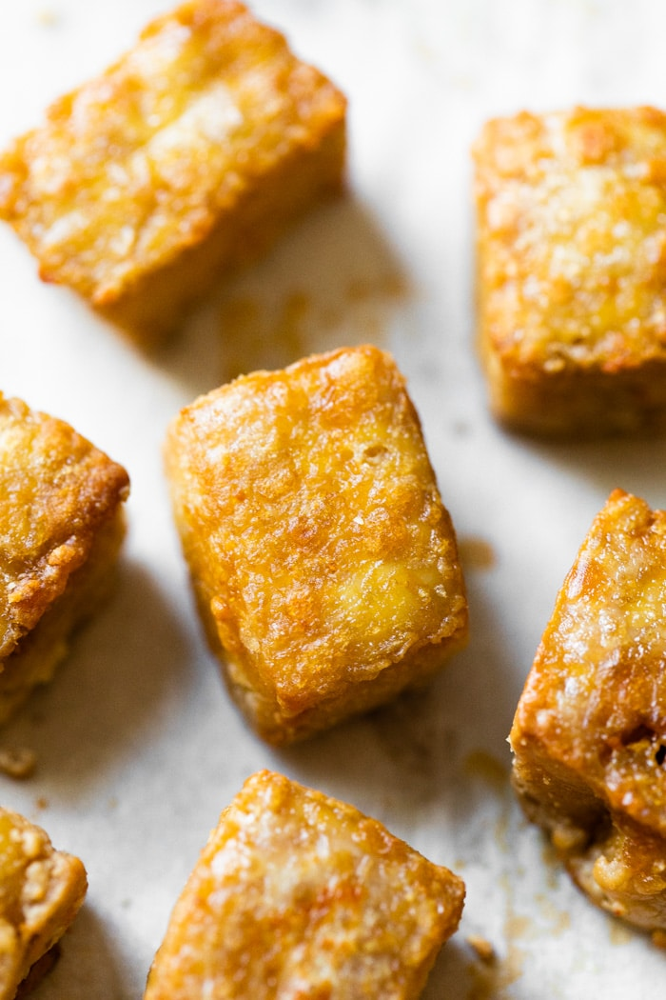

Conor's EZ-Tofu Recipe
"Tofu Nuggers" - Bobbor Goibsim

This is the simplest recipe that I've found to make delicious, crispy, chewy tofu. It requires no splattering oil for deep-frying, nor does it require any prolonged pressing or other preparations. It doesn't even require you to oil the pan before you bake, and you don't need to flip it!
Ingredients
- Tofu - 1 pkg
- Oven parchment paper
- That's it!
Cooking Instructions:
- Pre-heat oven to 425`
- Cut tofu into pieces no larger than chunks and no smaller than pieces
- Put tofu chunks onto baking sheet lined with parchment paper
- Bake in oven for 40-50 minutes. When you can smell it, it's done
- Take out of oven, let cool for ~5 minutes
- Add to sauce
- Serve